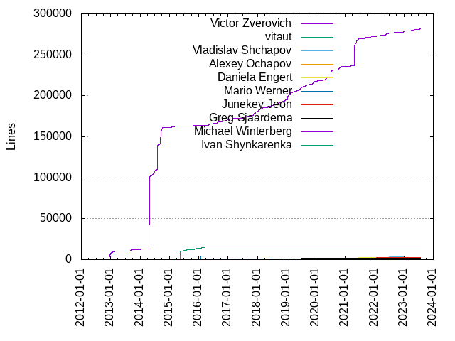
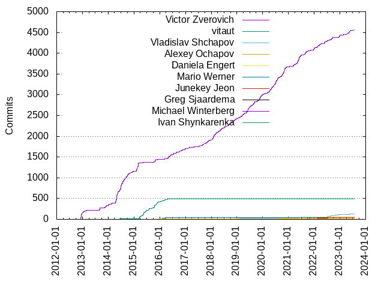

Authors
| Author | Commits (%) | + lines | - lines | First commit | Last commit | Age | Active days | # by commits |
|---|
| Victor Zverovich | 4573 (73.06%) | 281453 | 220958 | 2012-12-07 | 2023-07-26 | 3883 days, 6:39:03 | 1382 | 1 |
| vitaut | 487 (7.78%) | 15822 | 4533 | 2012-12-07 | 2016-04-21 | 1230 days, 23:04:46 | 163 | 2 |
| Vladislav Shchapov | 126 (2.01%) | 4189 | 2517 | 2020-10-29 | 2023-06-16 | 959 days, 20:03:40 | 85 | 3 |
| Alexey Ochapov | 62 (0.99%) | 2075 | 1000 | 2020-08-20 | 2021-12-23 | 490 days, 6:17:07 | 42 | 4 |
| Daniela Engert | 61 (0.97%) | 2341 | 961 | 2018-04-18 | 2023-05-05 | 1843 days, 0:04:47 | 48 | 5 |
| Mario Werner | 41 (0.66%) | 4750 | 4560 | 2016-01-11 | 2017-05-23 | 497 days, 21:59:56 | 15 | 6 |
| Junekey Jeon | 38 (0.61%) | 2471 | 913 | 2020-09-18 | 2022-07-14 | 664 days, 3:44:07 | 9 | 7 |
| Greg Sjaardema | 19 (0.30%) | 55 | 41 | 2019-05-03 | 2022-08-29 | 1214 days, 5:44:03 | 13 | 8 |
| Michael Winterberg | 16 (0.26%) | 247 | 163 | 2016-01-01 | 2022-07-05 | 2376 days, 15:17:19 | 15 | 9 |
| Ivan Shynkarenka | 16 (0.26%) | 62 | 41 | 2016-09-27 | 2023-01-26 | 2312 days, 4:06:25 | 15 | 10 |
| Barry Revzin | 15 (0.24%) | 963 | 532 | 2020-05-18 | 2023-07-01 | 1139 days, 0:15:03 | 14 | 11 |
| Jonathan Müller | 14 (0.22%) | 209 | 45 | 2016-11-01 | 2023-04-23 | 2364 days, 10:45:31 | 13 | 12 |
| Dean Moldovan | 14 (0.22%) | 268 | 103 | 2015-09-26 | 2016-05-03 | 219 days, 22:25:02 | 9 | 13 |
| Владислав Щапов | 12 (0.19%) | 293 | 118 | 2020-10-27 | 2021-06-18 | 234 days, 7:32:03 | 7 | 14 |
| Shawn Zhong | 12 (0.19%) | 432 | 112 | 2022-12-17 | 2023-03-10 | 83 days, 7:25:23 | 10 | 15 |
| Paul Dreik | 12 (0.19%) | 1459 | 38 | 2019-04-28 | 2021-08-29 | 853 days, 18:24:14 | 9 | 16 |
| Rosen Penev | 11 (0.18%) | 65 | 71 | 2019-08-29 | 2019-11-07 | 70 days, 1:47:18 | 3 | 17 |
| Florin Iucha | 10 (0.16%) | 367 | 335 | 2018-07-04 | 2021-11-25 | 1239 days, 18:05:01 | 8 | 18 |
| Elias Kosunen | 10 (0.16%) | 694 | 436 | 2018-03-15 | 2019-02-02 | 324 days, 16:14:24 | 8 | 19 |
| medithe | 9 (0.14%) | 36 | 28 | 2018-08-07 | 2020-08-18 | 742 days, 0:56:24 | 9 | 20 |
These didn't make it to the top: jk-jeon, Orivej Desh, Dimitrij Mijoski, Carter Li, rimathia, denchat, Jonathan Gopel, Björn Schäpers, Remotion, Gregory Czajkowski, Vertexwahn, Ingo van Lil, Alex Martin, timsong-cpp, gabime, Ryuuke, Roman-Koshelev, Lars Gullik Bjønnes, JackBoosY, Deniz Evrenci, Billy Donahue, Andreas Schönle, refnum, mwinterb, jdale88, Tobias Hammer, Nicolas, Marek Kurdej, Jean-Michaël Celerier, Jack Andersen, Federico, Daumantas Kavolis, Charles Milette, Alex Alabuzhev, mocabe, jamboree, darklukee, alabuzhev, Walter Gray, Vladimir Solontsov, Sergiu Deitsch, Sean McBride, Scott Ramsby, Riccardo Brugo, Pavel Novikov, Park DongHa, Park Dong-Ha, Mário Feroldi, MikePopoloski, Mike Crowe, Magnus Bjerke Vik, Lectem, Joyce, Johan 't Hart, Henry Schreiner, Hans-Martin B. Jensen, Denis Blank, Daniel.Perry, Bruce Mitchener, Alexander Bock, Alex Guteniev, 谭九鼎, xentec, t-wiser, sunmy2019, stryku, peterbell10, morinmorin, moiwi, matrackif, johnthagen, jehelset, francesco-st, codicodi, carterl, Yin Zhong, Yaser Afshar, XZiar, Vedran Miletić, Stepan Ponomaryov, Spiros Tsalikis, Sergey, Sean LK, Patrick Roocks, Patrick Geltinger, OptoCloud, Olli Lupton, Minty-Meeo, Michael Kasperovich, Mattias Ljungström, Manu343726, Kingcom, Kefu Chai, Juraj, Josh Essman, Jonathan W, Johan Norberg, Jean-Charles Lefebvre, Jason Cobb, Jan Hellwig, Ihor Dutchak, Haowei Hsu, Gleb Mazovetskiy, Giuseppe Corbelli, Florimond Collette, Egor Pugin, Dmitriy Kurkin, Daniel Krügler, Dana Jansens, Dair Grant, Daan De Meyer, Chris White, Axel Kohlmeyer, Attila Mark, Andrey Filipenkov, Alexey Morozov, 郭荣飞, 文佳鹏, zhsj, zeffy, yumeyao, yumetodo, vtta, viz, virgiliofornazin, torsten, tom-huntington, tnovotny, tmartin-gh, timkalu, thesmurph, sven-herrmann, sv1990, superfunc, rtobar, root, rlalik, ricco19, razaqq, randomizedthinking, parkertomatoes, owent, olivier80, nathannaveen, n16h7hunt3r, mojoBrendan, mogemimi, luzpaz, luncliff, lukester1975, lucpelletier, liuping, kitegi, kent-tri, jstaahl, jkflying, iPherian, hubslave, huangqinjin, hotwatermorning, hhggit, hhb, gerboengels, gawain, frithrah, franchuti688, flagarde, fghzxm, effzeh, dspc-douglas, dominicpoeschko, dependabot[bot], daniel, cstamford, cre, crbrz, chronoxor, christinaa, brm, asraa, aruhan, alexey-milovidov, agga, Zach Toogood, Yuval Gamzon-Kapeller, YuTArrUsO, Vyacheslav Napadovsky, Vitaly Zaitsev, Virgilio Alexandre Fornazin, VinaCC, VasiliPupkin256, Vasili Galka, VZ, Trent Houliston, ToolsDevler, Tony E Lewis, Tommy Nguyen, Tomek Rozen, Tom de Geus, Tobias Schlüter, Tobias Ribizel, Tobias Hellmann, Tinson Lai, Tim Blechmann, Tilman Keskinöz, Thomas Bernard, TheQwertiest, TheOmegaCarrot, The Gitter Badger, Taro Matsuzawa aka. btm, Tanki Zhang, Syohei YOSHIDA, Steven Hoving, Stefan Weil, Spirrwell, Sign Bit, Shauren, Sergey Perepelitsa, Seokjin Lee, Sebastian König, Sean L, Samuel Debionne, Rémi Burtin, Ryan Sherlock, Russell Greene, Ronny Krüger, Robert Franke, Richard Musil, Richard Maxwell, Richard Berger, Rich E, Riccardo Ghetta (larix), Ravi J, Raul Tambre, Radu Popescu, Radek Brich, Quentin Buathier, Pramod Kumbhar, Pokechu22, Pierre-Antoine Lacaze, Pierre Kestener, Philip Miller, Petr Mánek, Patrik Weiskircher, Ozomahtli, Orvid King, Oliver Lee, Olaf Hering, Nils Moehrle, Nikolay Rapotkin, Nikita Sobolev, Nico Rieck, Nick Kiesel, Nicholas Hutchinson, Niall Douglas (s [underscore] sourceforge {at} nedprod [dot] com), NewbieOrange, Naios, Milian Wolff, Mikolaj Paraniak, Mikhail Paulyshka, Mihai Todor, Michael Lui, Max FERGER, Max, Matthias Liedtke, Matthew Gilbert, Mattes D, Mathias Born, Mathew Cucuzella, Masashi Fujita, Martin Jeřábek, Markus Werle, Mark de Wever, Mark Santaniello, MariadeAnton, MarcDirven, Malcolm Parsons, Maksymilian Czudziak, Maciej Dems, Léonard Gérard, Ludek Vodicka, Lucian Petrut, Lounarok, Louis Wilson, Lindsay Roberts, Lieven de Cock, Liedtke, Leonid Yuriev, Leon Klingele, Lee, Byoung-young, Laurent Stacul, Krzysztof Wesolowski, Kieran Clancy, Khalil Estell, Kevin Puetz, Kevin Hwang, Kenny Weiss, Kazantcev Andrey, Kasra Hashemi, Kais Ben Salah, Jürgen Hock, Jussi Viiri, June Liu, Julian Rüth, Julian Amann, Joël Lamotte, Jose Miguel Pérez, Jordan Williams, Jonathan Wakely, Jonathan Emmett, Johnathan, John Steele Scott, John Melas, Johan J, Jiahao XU, Jessy De Lannoit, Jeremy Ong, Jelle van der Waa, Javier Honduvilla Coto, Jason Turner, Jason S Zang, Jason A. Donenfeld, Jan Tojnar, Jan Schwers, James Beach, Jakub Wilk, JP Cimalando, Ivan Volnov, Ivan Polyakov, Issam Maghni, Ilya Kurdyukov, IkarusDeveloper, Ian Bell, Hugh Wang, Henry Fredrick Schreiner, HecticSerenity, Hannes Friederich, HE, Tao, Guillaume Fraux, Graham Inggs, Glen Stark, Giovanni Cerretani, Germán Méndez Bravo, Gawain Bolton, Gabi Melman, Froster, François Carouge, Finkman, Fernando Pelliccioni, Federico Razzoli, Evgeniy Gerasimenko, Eric Fiselier, Eric Curtin, Eren Okka, Elnar Dakeshov, Elliot, Elias Daler, Egor Seredin, Dror Levin, Dominik Schmidt, Dmitry Petrashko, Dmitry Panteleev, Dmitry Alexeev, Dmitriy Vetutnev, Dmitriy, Dhruv Paranjape, David P. Sicilia, David Korczynski, David Chisnall, Daniil Goncharov, DanielaE, Daniel Marshall, Daniel Laügt, Dan McGregor, Dan Ibanez, Cristi, Cory Quammen, Constantine Tarasenkov, Cole Mickens, Cloyce D. Spradling, Cleroth, Clare Macrae, Christopher Di Bella, Christian Parpart, Chris Thrasher, Chris Martin, Chen Hayat, Charlie Barto, Candy Gumdrop, Camille Bordignon, Cameron DaCamara, Calum Robinson, Brian, Brainy0207, Boris Dalstein, Bjorn Fahller, Bjoern Thiel, Bin Lan, Bernhard Manfred Gruber, Bernd Baumanns, Benoît Lormeau, Beat Bolli, Bart Siwek, Attila Tajti, Attila M. Szilagyi, Ashton Fagg, ArthurSonzogni, Arthur Danskin, Artem Golubikhin, Arnaud Desitter, Antony Polukhin, Andy Maloney, Andrey Glebov, Andrew Gunnerson, Andrew Corrigan, Andreone, Andreas Rogge, AlιAѕѕaѕѕιN, Alta, Alexey Gorishny, Alexej Harm, Alexander Lanin, Alexander Gallego, Alexander Bolz, Alex, Alecto Irene Perez, Alberto Aguirre, Aidan Sun, Adnan, Adam Burgess, Acretock, Abdó Roig-Maranges, Abdo Roig-Maranges
Only top 20 authors shown
Only top 20 authors shown
| Month | Author | Commits (%) | Next top 5 | Number of authors |
|---|
| 2023-07 | Victor Zverovich | 16 (66.67% of 24) | razaqq, Ozomahtli, Martin Jeřábek, Kieran Clancy, Jürgen Hock | 9 |
| 2023-06 | Victor Zverovich | 13 (59.09% of 22) | Minty-Meeo, Hans-Martin B. Jensen, dependabot[bot], Vladislav Shchapov, Tobias Schlüter | 8 |
| 2023-05 | Victor Zverovich | 62 (72.09% of 86) | Vladislav Shchapov, Joyce, Florimond Collette, Daniela Engert, Dana Jansens | 16 |
| 2023-04 | Victor Zverovich | 26 (63.41% of 41) | Daniela Engert, Vertexwahn, Vladislav Shchapov, Mikhail Paulyshka, Louis Wilson | 10 |
| 2023-03 | Victor Zverovich | 8 (44.44% of 18) | Vladislav Shchapov, tmartin-gh, TheOmegaCarrot, Shawn Zhong, Joyce | 10 |
| 2023-02 | Victor Zverovich | 8 (42.11% of 19) | Shawn Zhong, Vladislav Shchapov, tom-huntington, luzpaz, Russell Greene | 9 |
| 2023-01 | Victor Zverovich | 14 (53.85% of 26) | Shawn Zhong, jk-jeon, Vladislav Shchapov, Kenny Weiss, Ivan Shynkarenka | 8 |
| 2022-12 | Victor Zverovich | 45 (77.59% of 58) | Vladislav Shchapov, Shawn Zhong, Orvid King, Niall Douglas (s [underscore] sourceforge {at} nedprod [dot] com), Cleroth | 6 |
| 2022-11 | Vladislav Shchapov | 12 (42.86% of 28) | Victor Zverovich, thesmurph, Stepan Ponomaryov, Radek Brich, Maksymilian Czudziak | 10 |
| 2022-10 | Vladislav Shchapov | 6 (46.15% of 13) | Ihor Dutchak, Victor Zverovich, Tinson Lai, Stepan Ponomaryov, Patrick Roocks | 7 |
| 2022-09 | Victor Zverovich | 34 (66.67% of 51) | Vladislav Shchapov, Björn Schäpers, huangqinjin, gerboengels, Zach Toogood | 12 |
| 2022-08 | Victor Zverovich | 26 (57.78% of 45) | Vladislav Shchapov, Dimitrij Mijoski, Rémi Burtin, Olli Lupton, Mark Santaniello | 10 |
| 2022-07 | Victor Zverovich | 20 (41.67% of 48) | Vladislav Shchapov, Dimitrij Mijoski, Junekey Jeon, Federico, Daniel Krügler | 10 |
| 2022-06 | Victor Zverovich | 19 (61.29% of 31) | Vladislav Shchapov, jehelset, agga, Mattes D, Juraj | 9 |
| 2022-05 | Victor Zverovich | 42 (76.36% of 55) | Vladislav Shchapov, Ivan Shynkarenka, nathannaveen, frithrah, Sean McBride | 8 |
| 2022-04 | Victor Zverovich | 15 (88.24% of 17) | Vladislav Shchapov, Mattias Ljungström | 3 |
| 2022-03 | Victor Zverovich | 39 (70.91% of 55) | timsong-cpp, Riccardo Brugo, Sean McBride, rtobar, cre | 11 |
| 2022-02 | Victor Zverovich | 39 (56.52% of 69) | Junekey Jeon, Vladislav Shchapov, Andrey Filipenkov, jk-jeon, YuTArrUsO | 12 |
| 2022-01 | Victor Zverovich | 36 (54.55% of 66) | Junekey Jeon, Barry Revzin, Vladislav Shchapov, matrackif, VasiliPupkin256 | 15 |
| 2021-12 | Victor Zverovich | 32 (58.18% of 55) | Alexey Ochapov, Vladislav Shchapov, Marek Kurdej, matrackif, lucpelletier | 9 |
| 2021-11 | Vladislav Shchapov | 6 (30.00% of 20) | Victor Zverovich, Pavel Novikov, Florin Iucha, Alex Guteniev, lukester1975 | 9 |
| 2021-10 | Vladislav Shchapov | 25 (45.45% of 55) | Victor Zverovich, Josh Essman, Daniela Engert, zhsj, timkalu | 13 |
| 2021-09 | Victor Zverovich | 45 (77.59% of 58) | Roman-Koshelev, Vladislav Shchapov, jk-jeon, Vertexwahn, Pierre-Antoine Lacaze | 11 |
| 2021-08 | Victor Zverovich | 42 (73.68% of 57) | Paul Dreik, Alexey Ochapov, Vladislav Shchapov, sunmy2019, owent | 9 |
| 2021-07 | Victor Zverovich | 19 (63.33% of 30) | Spiros Tsalikis, mwinterb, brm, Mattias Ljungström, Jonathan Emmett | 11 |
| 2021-06 | Victor Zverovich | 68 (77.27% of 88) | Владислав Щапов, Daniela Engert, Greg Sjaardema, sunmy2019, Tobias Ribizel | 14 |
| 2021-05 | Victor Zverovich | 111 (76.03% of 146) | Daniela Engert, Владислав Щапов, Alexey Ochapov, Sergiu Deitsch, Michael Winterberg | 15 |
| 2021-04 | Victor Zverovich | 37 (51.39% of 72) | Alexey Ochapov, Daniela Engert, denchat, Владислав Щапов, yumeyao | 11 |
| 2021-03 | Victor Zverovich | 38 (69.09% of 55) | Alexey Ochapov, Yaser Afshar, Jason Cobb, vtta, moiwi | 13 |
| 2021-02 | Alexey Ochapov | 8 (44.44% of 18) | Victor Zverovich, Yuval Gamzon-Kapeller, Mike Crowe, Jiahao XU | 5 |
| 2021-01 | Victor Zverovich | 11 (55.00% of 20) | Yin Zhong, Alexey Ochapov, randomizedthinking, Walter Gray, Ivan Shynkarenka | 8 |
| 2020-12 | Victor Zverovich | 11 (44.00% of 25) | Alexey Ochapov, 谭九鼎, Walter Gray, Issam Maghni, Finkman | 10 |
| 2020-11 | Victor Zverovich | 108 (87.80% of 123) | Jonathan Gopel, rimathia, Alexey Ochapov, darklukee, Walter Gray | 9 |
| 2020-10 | Victor Zverovich | 80 (80.81% of 99) | Jonathan Gopel, Владислав Щапов, francesco-st, darklukee, Tobias Hammer | 13 |
| 2020-09 | Victor Zverovich | 51 (68.92% of 74) | Junekey Jeon, jk-jeon, t-wiser, rimathia, mwinterb | 15 |
| 2020-08 | Victor Zverovich | 41 (71.93% of 57) | medithe, Greg Sjaardema, Barry Revzin, t-wiser, n16h7hunt3r | 12 |
| 2020-07 | Victor Zverovich | 116 (89.23% of 130) | Kingcom, alexey-milovidov, Vitaly Zaitsev, Tony E Lewis, Tobias Hammer | 14 |
| 2020-06 | Victor Zverovich | 58 (84.06% of 69) | Greg Sjaardema, 文佳鹏, rimathia, flagarde, Leonid Yuriev | 10 |
| 2020-05 | Victor Zverovich | 66 (80.49% of 82) | rimathia, Vladimir Solontsov, peterbell10, Orivej Desh, Markus Werle | 14 |
| 2020-04 | Victor Zverovich | 69 (87.34% of 79) | gabime, Johan Norberg, asraa, Krzysztof Wesolowski, Jan Tojnar | 9 |
| 2020-03 | Victor Zverovich | 33 (70.21% of 47) | Scott Ramsby, refnum, Dair Grant, Vladimir Solontsov, Spirrwell | 11 |
| 2020-02 | Victor Zverovich | 10 (62.50% of 16) | refnum, fghzxm, dominicpoeschko, Jordan Williams, IkarusDeveloper | 6 |
| 2020-01 | Victor Zverovich | 26 (59.09% of 44) | JackBoosY, Greg Sjaardema, zeffy, torsten, dspc-douglas | 11 |
| 2019-12 | Victor Zverovich | 66 (83.54% of 79) | Ivan Shynkarenka, Florin Iucha, Egor Pugin, 谭九鼎, parkertomatoes | 11 |
| 2019-11 | Victor Zverovich | 72 (76.60% of 94) | Rosen Penev, Florin Iucha, daniel, Tom de Geus, Robert Franke | 13 |
| 2019-10 | Victor Zverovich | 31 (70.45% of 44) | Orivej Desh, Ivan Shynkarenka, kent-tri, Tanki Zhang, Deniz Evrenci | 6 |
| 2019-09 | Victor Zverovich | 31 (68.89% of 45) | Daumantas Kavolis, Paul Dreik, Deniz Evrenci, mwinterb, gabime | 11 |
| 2019-08 | Victor Zverovich | 60 (88.24% of 68) | luncliff, hhb, Samuel Debionne, Rosen Penev, Greg Sjaardema | 9 |
| 2019-07 | Victor Zverovich | 49 (80.33% of 61) | Charles Milette, Jack Andersen, Daan De Meyer, Vedran Miletić, Kais Ben Salah | 7 |
| 2019-06 | Victor Zverovich | 92 (94.85% of 97) | Björn Schäpers, mocabe, Paul Dreik, Christopher Di Bella | 5 |
| 2019-05 | Victor Zverovich | 45 (78.95% of 57) | denchat, mocabe, Paul Dreik, stryku, Ronny Krüger | 8 |
| 2019-04 | Victor Zverovich | 34 (79.07% of 43) | Paul Dreik, Lectem, Billy Donahue, ToolsDevler, HE, Tao | 7 |
| 2019-03 | Victor Zverovich | 52 (78.79% of 66) | Ivan Shynkarenka, Billy Donahue, ricco19, mwinterb, gawain | 13 |
| 2019-02 | Victor Zverovich | 24 (70.59% of 34) | Daniela Engert, morinmorin, Park Dong-Ha, Michael Lui, Elias Kosunen | 8 |
| 2019-01 | Victor Zverovich | 17 (68.00% of 25) | Daniela Engert, Elias Kosunen, Michael Winterberg | 4 |
| 2018-12 | Victor Zverovich | 41 (77.36% of 53) | Nicolas, Daniela Engert, liuping, Sign Bit, Johan J | 9 |
| 2018-11 | Victor Zverovich | 26 (68.42% of 38) | Andreas Schönle, Park Dong-Ha, tnovotny, stryku, hotwatermorning | 9 |
| 2018-10 | Victor Zverovich | 46 (74.19% of 62) | Daniela Engert, XZiar, Kefu Chai, superfunc, Mathew Cucuzella | 8 |
| 2018-09 | Victor Zverovich | 52 (80.00% of 65) | Daniela Engert, medithe, hhggit, Steven Hoving, Jonathan Müller | 9 |
| 2018-08 | Victor Zverovich | 27 (87.10% of 31) | medithe, Thomas Bernard, Elias Daler | 4 |
| 2018-07 | Victor Zverovich | 35 (77.78% of 45) | MikePopoloski, Henry Schreiner, gabime, Marek Kurdej, Henry Fredrick Schreiner | 8 |
| 2018-06 | Victor Zverovich | 20 (64.52% of 31) | Remotion, gabime, Jonathan Müller, Elias Kosunen, Dror Levin | 7 |
| 2018-05 | Victor Zverovich | 51 (89.47% of 57) | Elias Kosunen, sv1990, Remotion, Michael Winterberg, Dan McGregor | 6 |
| 2018-04 | Victor Zverovich | 35 (83.33% of 42) | Daniela Engert, Michael Winterberg, Elias Kosunen, DanielaE, Christian Parpart | 6 |
| 2018-03 | Victor Zverovich | 54 (87.10% of 62) | Elias Kosunen, johnthagen, Vasili Galka, Sebastian König, Park DongHa | 8 |
| 2018-02 | Victor Zverovich | 71 (88.75% of 80) | Lars Gullik Bjønnes, johnthagen, hubslave, Andrew Gunnerson, Alex Alabuzhev | 6 |
| 2018-01 | Victor Zverovich | 57 (95.00% of 60) | Giuseppe Corbelli, peterbell10 | 3 |
| 2017-12 | Victor Zverovich | 26 (86.67% of 30) | Virgilio Alexandre Fornazin, Tim Blechmann, Artem Golubikhin, Abdó Roig-Maranges | 5 |
| 2017-11 | Victor Zverovich | 38 (86.36% of 44) | virgiliofornazin, Mike Crowe, Mihai Todor, JP Cimalando, Alex Alabuzhev | 7 |
| 2017-10 | Victor Zverovich | 30 (88.24% of 34) | Michael Winterberg, yumetodo, Ludek Vodicka | 4 |
| 2017-09 | Victor Zverovich | 31 (91.18% of 34) | Mário Feroldi, Elnar Dakeshov | 3 |
| 2017-08 | Victor Zverovich | 19 (82.61% of 23) | Manu343726, Henry Schreiner, Alex Alabuzhev | 4 |
| 2017-07 | Victor Zverovich | 22 (73.33% of 30) | Alexander Bock, Mário Feroldi, Lee, Byoung-young, Jonathan Müller, Evgeniy Gerasimenko | 7 |
| 2017-06 | Victor Zverovich | 4 (44.44% of 9) | Jonathan Müller, Alex Martin | 3 |
| 2017-05 | Victor Zverovich | 4 (30.77% of 13) | Mario Werner, Tomek Rozen, Quentin Buathier, Jonathan Müller, Ian Bell | 8 |
| 2017-04 | 郭荣飞 | 1 (25.00% of 4) | effzeh, Ivan Shynkarenka, Graham Inggs | 4 |
| 2017-03 | Victor Zverovich | 11 (78.57% of 14) | Sean LK, Pierre Kestener, Arthur Danskin | 4 |
| 2017-02 | Victor Zverovich | 21 (87.50% of 24) | olivier80, Dominik Schmidt, Alexey Gorishny | 4 |
| 2017-01 | Victor Zverovich | 10 (62.50% of 16) | mojoBrendan, Rich E, Magnus Bjerke Vik, Jean-Charles Lefebvre, Calum Robinson | 7 |
| 2016-12 | Victor Zverovich | 23 (88.46% of 26) | Jean-Charles Lefebvre, Eric Fiselier, Andrey Glebov | 4 |
| 2016-11 | Victor Zverovich | 25 (75.76% of 33) | Jonathan Müller, alabuzhev, Chen Hayat | 4 |
| 2016-10 | Victor Zverovich | 22 (75.86% of 29) | codicodi, Jan Hellwig, chronoxor, Philip Miller, Lectem | 6 |
| 2016-09 | Victor Zverovich | 8 (66.67% of 12) | Ivan Shynkarenka, Jean-Michaël Celerier, Hugh Wang | 4 |
| 2016-08 | Victor Zverovich | 36 (100.00% of 36) | | 1 |
| 2016-07 | Victor Zverovich | 19 (86.36% of 22) | Tilman Keskinöz, Taro Matsuzawa aka. btm, Nils Moehrle | 4 |
| 2016-06 | Victor Zverovich | 31 (93.94% of 33) | Sean LK, Glen Stark | 3 |
| 2016-05 | Victor Zverovich | 51 (87.93% of 58) | Dean Moldovan, Jakub Wilk, Dmitry Panteleev | 4 |
| 2016-04 | Victor Zverovich | 29 (63.04% of 46) | vitaut, Mario Werner | 3 |
| 2016-03 | vitaut | 19 (70.37% of 27) | Victor Zverovich, Michael Winterberg, Denis Blank | 4 |
| 2016-02 | Mario Werner | 20 (46.51% of 43) | vitaut, Victor Zverovich, Sergey, Patrik Weiskircher | 5 |
| 2016-01 | Mario Werner | 16 (44.44% of 36) | vitaut, Michael Winterberg, Victor Zverovich | 4 |
| 2015-12 | vitaut | 29 (74.36% of 39) | Victor Zverovich, Nicholas Hutchinson, Magnus Bjerke Vik, Maciej Dems, Johan 't Hart | 7 |
| 2015-11 | vitaut | 49 (79.03% of 62) | Ingo van Lil, Victor Zverovich, Michael Kasperovich, Johan 't Hart | 5 |
| 2015-10 | vitaut | 78 (55.32% of 141) | Victor Zverovich, Dean Moldovan, Vyacheslav Napadovsky, Sean L, Richard Maxwell | 7 |
| 2015-09 | vitaut | 4 (50.00% of 8) | Victor Zverovich, Dean Moldovan | 3 |
| 2015-08 | vitaut | 27 (69.23% of 39) | Victor Zverovich, Alex Martin, jkflying, Radu Popescu | 5 |
| 2015-07 | vitaut | 24 (88.89% of 27) | xentec, Victor Zverovich | 3 |
| 2015-06 | vitaut | 43 (87.76% of 49) | jamboree, Victor Zverovich | 3 |
| 2015-05 | vitaut | 84 (95.45% of 88) | Victor Zverovich, The Gitter Badger, Syohei YOSHIDA | 4 |
| 2015-04 | vitaut | 18 (85.71% of 21) | Victor Zverovich | 2 |
| 2015-03 | Victor Zverovich | 89 (56.69% of 157) | vitaut, Carter Li, cstamford, Shauren, Naios | 7 |
| 2015-02 | Victor Zverovich | 112 (84.85% of 132) | Ryuuke, Carter Li, carterl, viz, root | 12 |
| 2015-01 | Victor Zverovich | 10 (83.33% of 12) | aruhan, Mikolaj Paraniak | 3 |
| 2014-12 | Victor Zverovich | 27 (96.43% of 28) | Daniel.Perry | 2 |
| 2014-11 | Victor Zverovich | 18 (90.00% of 20) | Daniel.Perry | 2 |
| 2014-10 | Victor Zverovich | 51 (98.08% of 52) | Alexey Morozov | 2 |
| 2014-09 | Victor Zverovich | 66 (100.00% of 66) | | 1 |
| 2014-08 | Victor Zverovich | 76 (100.00% of 76) | | 1 |
| 2014-07 | Victor Zverovich | 119 (100.00% of 119) | | 1 |
| 2014-06 | Victor Zverovich | 129 (95.56% of 135) | vitaut, Johan 't Hart, Constantine Tarasenkov, Alexey Morozov | 5 |
| 2014-05 | Victor Zverovich | 144 (100.00% of 144) | | 1 |
| 2014-04 | Victor Zverovich | 130 (100.00% of 130) | | 1 |
| 2014-03 | vitaut | 3 (50.00% of 6) | jdale88 | 2 |
| 2014-02 | Victor Zverovich | 29 (96.67% of 30) | jdale88 | 2 |
| 2014-01 | Victor Zverovich | 25 (100.00% of 25) | | 1 |
| 2013-12 | Victor Zverovich | 32 (100.00% of 32) | | 1 |
| 2013-11 | Victor Zverovich | 25 (78.12% of 32) | Gregory Czajkowski, vitaut | 3 |
| 2013-10 | Gregory Czajkowski | 2 (100.00% of 2) | | 1 |
| 2013-09 | Victor Zverovich | 55 (100.00% of 55) | | 1 |
| 2013-08 | Victor Zverovich | 3 (100.00% of 3) | | 1 |
| 2013-05 | Victor Zverovich | 2 (100.00% of 2) | | 1 |
| 2013-04 | Victor Zverovich | 5 (100.00% of 5) | | 1 |
| 2013-03 | Victor Zverovich | 1 (100.00% of 1) | | 1 |
| 2013-02 | Victor Zverovich | 21 (100.00% of 21) | | 1 |
| 2013-01 | Victor Zverovich | 33 (100.00% of 33) | | 1 |
| 2012-12 | Victor Zverovich | 160 (99.38% of 161) | vitaut | 2 |
| Year | Author | Commits (%) | Next top 5 | Number of authors |
|---|
| 2023 | Victor Zverovich | 147 (62.29% of 236) | Vladislav Shchapov, Shawn Zhong, Daniela Engert, Barry Revzin, Vertexwahn | 51 |
| 2022 | Victor Zverovich | 324 (60.45% of 536) | Vladislav Shchapov, Junekey Jeon, Dimitrij Mijoski, Barry Revzin, timsong-cpp | 72 |
| 2021 | Victor Zverovich | 431 (63.95% of 674) | Alexey Ochapov, Vladislav Shchapov, Daniela Engert, Владислав Щапов, denchat | 90 |
| 2020 | Victor Zverovich | 669 (79.17% of 845) | Greg Sjaardema, Alexey Ochapov, rimathia, Jonathan Gopel, Junekey Jeon | 103 |
| 2019 | Victor Zverovich | 573 (80.36% of 713) | Rosen Penev, Paul Dreik, Orivej Desh, Ivan Shynkarenka, Daniela Engert | 66 |
| 2018 | Victor Zverovich | 515 (82.27% of 626) | Daniela Engert, Remotion, Elias Kosunen, medithe, Lars Gullik Bjønnes | 56 |
| 2017 | Victor Zverovich | 216 (78.55% of 275) | Jonathan Müller, Mário Feroldi, Mario Werner, Alexander Bock, Michael Winterberg | 46 |
| 2016 | Victor Zverovich | 257 (64.09% of 401) | vitaut, Mario Werner, Michael Winterberg, Dean Moldovan, Jonathan Müller | 29 |
| 2015 | vitaut | 416 (53.68% of 775) | Victor Zverovich, Dean Moldovan, Carter Li, Ingo van Lil, Ryuuke | 36 |
| 2014 | Victor Zverovich | 814 (97.95% of 831) | vitaut, jdale88, Daniel.Perry, Alexey Morozov, Johan 't Hart | 7 |
| 2013 | Victor Zverovich | 177 (95.16% of 186) | Gregory Czajkowski, vitaut | 3 |
| 2012 | Victor Zverovich | 160 (99.38% of 161) | vitaut | 2 |
| Domains | Total (%) |
|---|
| gmail.com | 4378 (69.95%) |
|---|
| fb.com | 1069 (17.08%) |
|---|
| users.noreply.github.com | 168 (2.68%) |
|---|
| shchapov.ru | 75 (1.20%) |
|---|
| ngrt.de | 62 (0.99%) |
|---|
| alexez.com | 62 (0.99%) |
|---|
| iaik.tugraz.at | 39 (0.62%) |
|---|
| kaist.ac.kr | 38 (0.61%) |
|---|
| meta.com | 14 (0.22%) |
|---|
| hotmail.com | 13 (0.21%) |
|---|